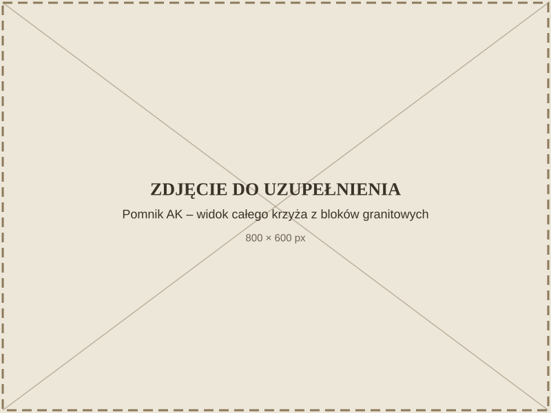
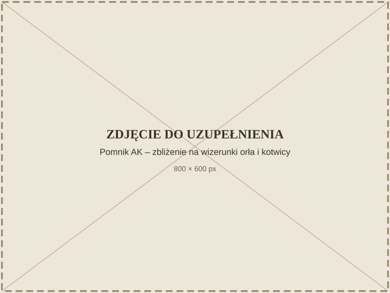

Home Army Soldiers Monument (Pomnik żołnierzy Armii Krajowej)
This is a place of remembrance — please treat your visit with respect.
Recording
0:00 / 0:00
Prefer to read? Expand the transcript


How to get there
Click the map to zoom
The mini-map is currently unavailable.
Address
ul. Harcerska 10, 24-140 Nałęczów
Directions
Accessibility
Open navigation ↗